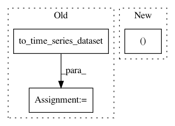

1f64e8d111a67ed8c97f9251f299805496b3644f,tslearn/svm.py,TimeSeriesSVR,fit,#TimeSeriesSVR#Any#Any#Any#,422
Before Change
else:
X, y = check_X_y(X, y, allow_nd=True)
X = check_dims(X, X_fit=None)
X = to_time_series_dataset(X)
self._X_fit = X
if self.kernel in self.variable_length_kernels:
assert self.kernel == "gak"
estimator_kernel = "precomputed"
self.gamma = gamma_soft_dtw(X)
sklearn_X = cdist_gak(X, X, sigma=numpy.sqrt(self.gamma / 2.))
else:
estimator_kernel = self.kernel
sklearn_X = _prepare_ts_datasets_sklearn(X)
After Change
return X_[self.svm_estimator_.support_]
def fit(self, X, y, sample_weight=None):
sklearn_X, kernel, y = self._preprocess_sklearn(X, y, set_X_fit=True)
self.svm_estimator_ = SVR(
C=self.C, kernel=kernel, degree=self.degree,
In pattern: SUPERPATTERN
Frequency: 3
Non-data size: 3
Instances
Project Name: rtavenar/tslearn
Commit Name: 1f64e8d111a67ed8c97f9251f299805496b3644f
Time: 2019-08-20
Author: romain.tavenard@univ-rennes2.fr
File Name: tslearn/svm.py
Class Name: TimeSeriesSVR
Method Name: fit
Project Name: rtavenar/tslearn
Commit Name: cdaf93634b49f3a5749adbe359c2169c51f0a6fe
Time: 2018-12-30
Author: romain.tavenard@univ-rennes2.fr
File Name: tslearn/neighbors.py
Class Name: KNeighborsTimeSeriesMixin
Method Name: kneighbors
Project Name: rtavenar/tslearn
Commit Name: 1f64e8d111a67ed8c97f9251f299805496b3644f
Time: 2019-08-20
Author: romain.tavenard@univ-rennes2.fr
File Name: tslearn/svm.py
Class Name: TimeSeriesSVC
Method Name: fit